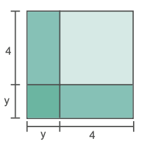
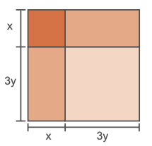
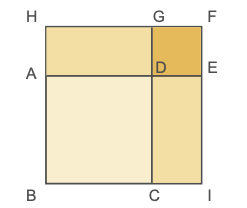
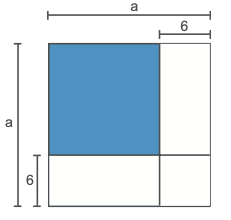
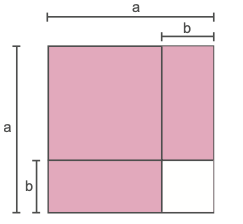
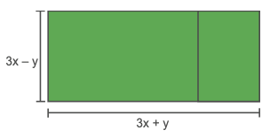
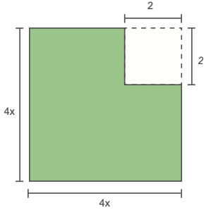

Unidade 3
Produtos notáveis e fatoração
86
Cavalos. Reino Unido, 2020.
87
Hoje existem mais de 100 raças de cavalos em todo o mundo. A gestação de uma égua dura aproximadamente 11 meses. Meia hora após o nascimento, o potro já está de pé e se aconchegando à mãe para a sua primeira mamada.
Normalmente, o veterinário faz o acompanhamento do “peso” desse animal. Para calcular o
aumento do
“peso” de um mês para o outro, pode-se utilizar a relação  , sendo que m
representa
o “peso” inicial do potro, p o percentual de aumento do “peso” mensal
e n a quantidade de meses.
, sendo que m
representa
o “peso” inicial do potro, p o percentual de aumento do “peso” mensal
e n a quantidade de meses.
converse
- Um veterinário pesou um potro e este encontra-se com 50 kg. Sabendo-se que o “peso” desse animal aumenta 20% ao mês, qual será o seu “peso” após 1 mês?
- Qual é a relação que nos permite calcular o “peso” desse animal após 2 meses? Qual será o seu “peso”?
- A expressão
 representa um produto notável. Como podemos
resolvê-lo?
representa um produto notável. Como podemos
resolvê-lo?
88
Quadrado da soma de dois termos
Algumas multiplicações de polinômios aparecem com frequência em problemas e apresentam um padrão em seus resultados, por isso são denominados produtos notáveis. Vamos estudá-los a seguir.
- Reproduza as figuras geométricas que se encontram nos anexos do livro, em uma folha de papel A4. Recorte, troque ideias com um colega e montem um quadrado, que deverá ser colado no caderno.
- Calculem a área do quadrado formado, mostrando duas formas diferentes de se obter esse resultado.
Note que para calcularmos a área do quadrado formado procedemos de duas formas diferentes.
Agora, observe o quadrado maior formado a seguir. Podemos calcular a sua área de duas maneiras distintas:
- 1.ª maneira: calcular a área de cada figura geométrica e adicioná-las.
a2 + ab + ab + b2 = a2 + 2ab + b2
- 2.ª maneira: calcular a área do quadrado maior utilizando a medida do seu lado a + b.
(a + b)2 = (a + b) ∙ (a +b) = a2 + ab + ab + b2 = a2 + 2ab + b2
Veja que (a + b)2 = a2 + 2ab + b2. O quadrado da soma de dois termos é um produto notável.
Vamos observar outras situações em que temos o quadrado da soma de dois termos.
- a) (a+5)2 = (a + 5) ∙ (a + 5) = a2 + 5a +5a + 25 = a2 + 10a + 25
- b) (b+c)2 = (b + c) ∙ (b + c) = b2 + bc + bc + c2 = b2 + 2bc + c2
- c) (4+m)2 = (4 + m) ∙ (4 + m) = 16 + 4m +4m + m2 = 16 + 8m + m2
- d) (2x+3y)2 = (2x + 3y) ∙ (2x + 3y) = 4x2 + 6xy + 6xy + 9y2 = 4x2 + 12xy + 9y 2
- e)
89
Encontre soluções
- Escreva, em seu caderno, o polinômio que representa a área de cada figura.
a)
- 
b)- 
- 2. Na figura a seguir, a área do quadrado ABCD é 4x2 cm 2 e do quadrado DEFG é 9y2 cm2. 

- a) Qual é a medida do lado do quadrado ABCD?
- b) Qual é a medida do lado do quadrado DEFG?
- c) Qual é a área do quadrado HFIB?
- 3. Calcule no caderno:
- a) (x + 7)2
- b)(3y + 5)2
- c) (6m + 2n)2
- d) (a3 + 4)2
- e) (x4 + y2)2
- f) (y + 0,3)2
- g)
- h)
- i)
- 4. Simplifique as expressões a seguir, no caderno.
- a) (x + 4)2 + (x + 3)2
- b) (y + 3)2 - (y + 1)2
- c) 8x + (5x + 2)2
- d) y(y + 6)2 - (7 + y)2
512 = (50 + 1)2 =
= 502 + 2 ∙ 50 ∙ 1 + 12 =
= 2 500 + 100 + 1 =
= 2 601
Calcule mentalmente:
- a) 342
- b) 722
- c) 182
- d) 622
- 6. Sabendo que x2 + y2 = 5 e xy = 2, calcule o valor de (x + y)2.
- 7. Sendo M = (y + 2)2 e N = (y + 5)2, determine:
- a) M - N
- b) M + N
90
- a) b
- b) a + b
- c) a2 + 2ab
- d) b2
- e) 2ab + b2
- a) 64
- b) 109
- c) 120
- d) 124
- e) 154
Quadrado da diferença de dois termos
Observe a figura a seguir:
- A figura é formada por dois quadrados e dois retângulos. Troque ideias com um colega e escrevam, no caderno, as expressões que representam as medidas dos lados de cada quadrado e cada retângulo que formam a figura.
- Escrevam as expressões que representam a área de cada um dos quadrados e retângulos que compõem a figura.
- Escrevam o trinômio que representa a área do quadrado verde escuro.
91
Veja que (a - b)2 = a2 - 2ab + b2. O quadrado da diferença de dois termos é um produto notável.
Vamos observar outras situações em que temos o quadrado da diferença de dois termos.
- a) (x - 3)2 = (x - 3) ∙ (x - 3) = x2 - 3x - 3x + 9 = x2 - 6x + 9
- b) (5 - y)2 = (5 - y) ∙ (5 - y) = 25 - 5y - 5y + y2 = 25 - 10y + y2
- c) (b - c)2 = (b - c) ∙ (b - c) = b2 - bc - bc + c2 = b2 - 2bc + c2
- d) (2x - 4y)2 = (2x - 4y) ∙ (2x - 4y) = 4x2 - 8xy - 8xy + 16y2 = 4x2 - 16xy + 16y2
Podemos notar um padrão nos resultados dos produtos acima.
- Troque ideias com um colega e expliquem o padrão existente nos resultados. Anotem, no caderno, a conclusão a que vocês chegaram.

Encontre soluções
- Escreva, em seu caderno, a expressão que representa a área da região colorida em
cada figura.
-
a)
-  b)
- 
- Calcule no caderno:
- a) (x - 5)2
- b) (2y - 7)2
- c) (3m - 6n)2
- d) (a5 - 4)2
- e) (x3 - y7)2
- f) (y - 0,2)2
- g)
- h)
- i)
- Simplifique as expressões a seguir em seu caderno.
- a) (x - 2)2 + (x - 3)2
- b) (m - 3)2 - (m - 5)2
- c) 10x + (8x - 1)2
- d) y(y - 2)2 - (12 - y)2
- Observe:
392 = (40 - 1)2 =
= 402 - 2 ∙ 40 ∙ 1 + 12 =
= 1 600 - 80 + 1 =
= 1 521
Calcule mentalmente:
- 262
- 192
- 482
- 572
92
- 5. Sabendo que x2 + y2 = 38 e xy = 9, calcule o valor de (x - y)2.
- 6. Sendo M = (y + 3)2 e N =
(y - 6)2
, determine:
- a) M - N
- b) M + N
- 7. Determine a área que representa a região colorida da figura.
Produto da soma pela diferença de dois termos
Observe a figura a seguir:
- Troque ideias com um colega e escrevam, no caderno, a expressão que representa a área da região mais escura da figura I.
- Ao recortarmos o retângulo de lados b e a – b da figura II e o reposicionarmos ao lado do retângulo de lados a e a – b, formamos a figura III. Vejam que a figura III tem a mesma área que a parte mais escura da figura I. Com as medidas indicadas na figura III, escrevam a expressão que indica a sua área.
Veja que (a + b)(a - b) = a2 - b2. O produto da soma pela diferença de dois termos é um produto notável.
93
Vamos observar outras situações em que temos o produto da soma pela diferença de dois termos.
- a) (x + 6)(x - 6) = x2 - 6x + 6x - 36 = x2 - 36
- b) (7 + y)(7 - y) = 49 - 7y + 7y - y2 = 49 - y2
- c) (2b + c)(2b - c) = 4b2 - 2bc + 2bc - c2 = 4b2 - c2
- d) (0,5 + m)(0,5 - m) = 0,25 - 0,5m + 0,5m - m2 = 0,25 - m2
- e)
Podemos notar um padrão nos resultados dos produtos acima.
- Troque ideias com um colega e expliquem o padrão existente nos resultados. Anotem, no caderno, a conclusão a que vocês chegaram.


Encontre soluções
- Escreva, no caderno, uma expressão que represente a área da região colorida.
a)b)
- 
- 
- 2. Calcule as expressões a seguir no caderno.
- a) (m + 5)(m - 5)
- b) (x3 + y)(x3 - y)
- c) (b - 3)(b + 3)
- d) (10 - 4x)(10 + 4x)
- e) (0,7 + y)(0,7 - y)
- f)
- g)
- h)
- 3. Observe:
- a) 29 ∙ 31
- b) 42 ∙ 38
- c) 53 ∙ 47
- d) 61 ∙ 59
19 ∙ 21 =
= (20 - 1)(20 + 1) =
= 400 - 1 = 399
Calcule mentalmente:
94
- 4. Resolva as expressões a seguir em seu caderno:
- a) (x + 3)(x - 3) + (x + 2)2
- b) 7y - (y - 4)2 + (y + 5)(y - 5)
- c) (xy - 1)2 + (xy + 1)(xy - 1) - (xy - 1)2
- 5. Sabendo que m2 -
n2 = 56 e m - n = 4, determine:
- o valor de m + n;
- o valor de m;
- o valor de n.
- 6. Se x + y = 18 e x - y = 4, calcule o valor de x2 - y2.
- 7. Em seu caderno, escreva os pares que podemos formar com os produtos e
polinômios dados.
- a) (x + 7)2
- b) (5x - 3)2
- c) (x + 8)(x - 8)
- d) (5x + 3)2
- e) (x + 2)(x - 2)
- f) (x - 7)2
I) x2 - 64
II) x2 - 14x + 49
III) 25x2 - 30x + 9
IV) x2 - 4
V) x2 + 14x + 49
VI) 25x2 + 30x + 9
Cada participante, na sua vez, deverá virar duas cartas e verificar se elas formam um par. Caso formem, o participante deverá recolher essas cartas consigo e jogar novamente. Se as cartas não formarem um par, deverão ser viradas novamente, passando, assim, a vez para o outro participante. Vence o jogo quem obtiver a maior quantidade de pares.